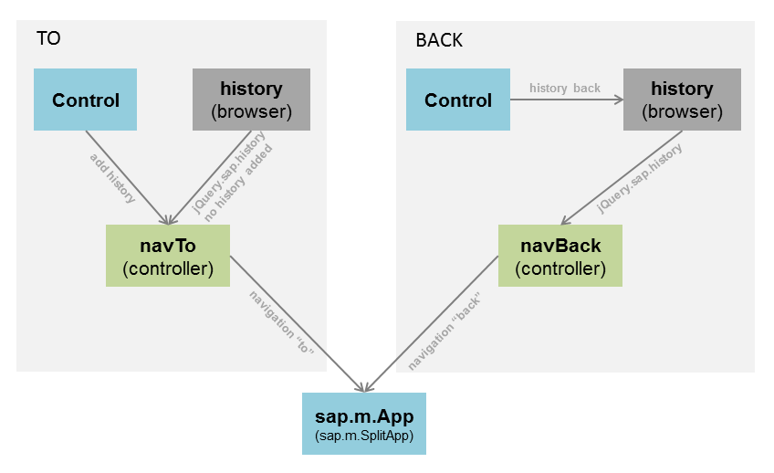

Navigation Using Browser History
HTML 5 comes with lots of cool features with which HTML page fetches data asynchronously and updates its UI dynamically without reloading the page. However the browser history back/forward buttons do not work any more since the URL of the application stays the same all the time. Some people may say that this is still acceptable because we can provide the back button somewhere in the application and teach the user to use this back button instead of the browser one. But for some mobile platform such as Android in which user has already been used to using the physical back button to do back navigation inside application, making back button work for application built with SAPUI5 mobile isn't an optional choice any more.
What does the physical back button do?
If application runs on a mobile device with physical back button, tapping on the back button has the same effect as tapping on the browser back button. If there's no history state in browser history, it quits the browser application. This is also valid when application runs in a WebView? using hybrid container as long as the container doesn't interfere the default behavior of the back button.
How should we support the physical back button?
Application built with SAPUI5 mobile runs through pages. After navigating to a new page, user expects to go back to the previous page when tapping on the physical back button. This behavior assumption requires the following:
- Every forward navigation to a new page should add a browser history state.
- Every back navigation to a previous should be triggered using the browser history.
With jQuery plugin jQuery.sap.history.js, a new history state can be added by changing the hash of the current URL with serialized state data which is sufficient to restore the current state when doing back navigation. jQuery.sap.history.js also provides API for navigating back one or several steps through the browser history states.
For each of both forward navigation (also called "to" navigation) and backward navigation (also called "back" navigation), there are two ways of triggering.
- "TO" navigation
- triggered by Controls (for example, tapping on a button to navigate to a new page)
- triggered by browser history (tapping on the browser forward button)
- "Back" navigation
- triggered by Controls (for example, tapping on the back button in page's header to go back to previous page)
- triggered by browser history (tapping on the browser back button or the physical back button)
The image below illustrates how the four ways of triggering should be handled:

The way of handling each of the four variations is explained in the following sections.
"TO" triggered by controls
When "TO" navigation is triggered by controls, a new history state needs to be added to the browser history with the new page information. Later when doing back navigation, a history state is popped out from browser history and we can decide which page we go back to by checking the information saved with the history state.
"TO" triggered by browser history
"TO" navigation can also be triggered by tapping on the browser forward button. We don't need to add a new history state because the history state has been added to browser history already. By checking the saved information with this history state, we know which page we go forward to.
"BACK" triggered by controls
In order to support the physical back button, we are required to do every back navigation through the browser history. Thus when "BACK" navigation is triggered by control, we ask the browser history to go back one or several steps by calling the provided API in jQuery.sap.history.js. The following behaviors are the same as "Back" triggered by browser history.
"BACK" triggered by browser history
When "BACK" navigation is triggered by browser history either the browser back button or the physical back button on mobile device is tapped, a history state is popped out from browser history. By checking the saved information with history state, we can navigate to the specified page.